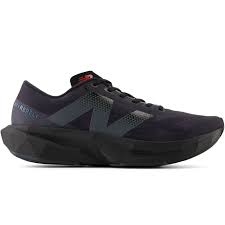
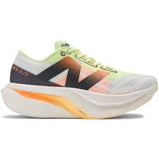
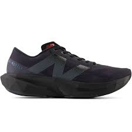
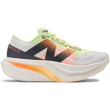

Witaj na stronie Pasjonaci Biegania!
Witajcie w naszej zakładce "O nas", dedykowanej wszystkim pasjonatom biegania! Jesteśmy zespołem entuzjastów, którzy od lat oddają się temu pięknemu sportowi z całym zaangażowaniem i pasją. Nasza strona powstała z myślą o wszystkich, którzy kochają ruch na świeżym powietrzu, chcą pogłębiać swoją wiedzę na temat biegania oraz dzielić się doświadczeniami z innymi biegaczami.
O nas
Jesteśmy pasjonatami zdrowego stylu życia od wielu lat. Naszą misją jest promowanie zdrowego odżywiania i regularnej aktywności fizycznej.
Oblicz swoje BMI
Buty
 



Źródło: nbsklep.pl
Jedzenie
Każdy posiłek można przygotować w wersji zdrowszej lub mniej zdrowej, w zależności od składników i metody gotowania. Na przykład, jajecznica może być zrobiona z dodatkiem masła i boczku, co dodaje tłuszczu i kalorii, albo z oliwą z oliwek i warzywami, co zwiększa ilość błonnika i witamin. Jeśli chodzi o jedzenie przed bieganiem, warto wybrać lekkie posiłki bogate w węglowodany, takie jak owsianka z owocami czy banan z masłem orzechowym. Po biegu, dobrym wyborem jest posiłek z białkiem i węglowodanami, na przykład jogurt grecki z miodem i orzechami lub kanapka z indykiem i awokado.
Kontakt
Masz pytania lub sugestie? Skontaktuj się z nami!
biegacze.kontakt@run.pl